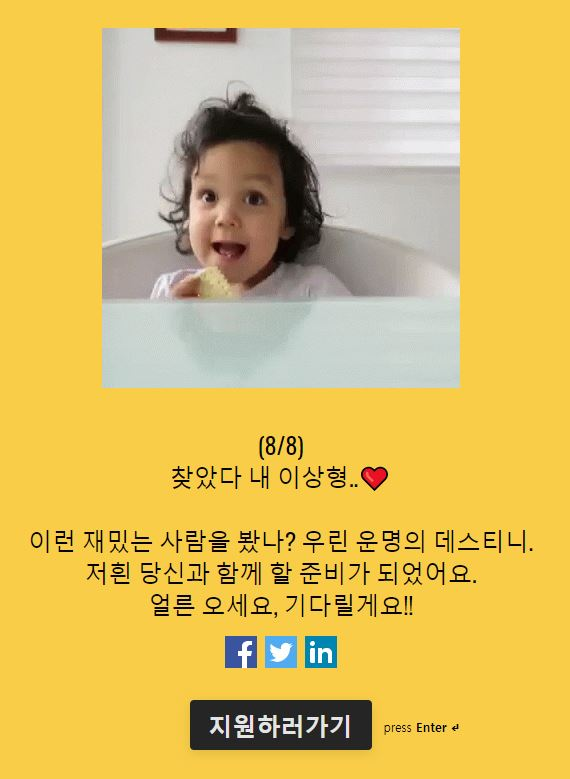

🙋♂️ My introduction
생년월일
1996.11.28
현재 26살
이메일
mc1128@naver.com
hmc8580@gmail.com
연락처
010-4775-8580
희망연봉
2800만원
📘 Available My Skill & Role
👨💻 자기소개서
지원동기
다양한 경험을 통한 파악
제가 스텝페이에 지원동기에는 4가지 이유가 있습니다.
첫번째로는 워드프레스 활용 경험이 있습니다.
군 제대를 하고 겜템이라는 게임 아이템 추천 및 우커머스를 통한 판매까지 해볼수있는 사이트를 기획을 하고 시도해보았습니다. 테마 및 플러그인을 설치하여 운용해보았지만 현재는 시간이 지나 사이트를 확인 할 수는 없습니다. 다만 워드프레스의 사용 유무는 워드프레스용 포트폴리오에서 확인이 가능합니다.
두번째로는 REACT 활용 경험입니다.
인스타그램 클론 코딩을 통하여 리액트를 활용해보았고 앞으로의 계획도 React를 사용하여 웹 프론트엔드쪽 구현을 지향하고있습니다.
세번째로는 구독플랫폼의 매력입니다.
현재 구독 서비스는 다양하게 적용되어있지만 아직까지 개인이 구독 플랫폼을 만들어서 운용하기에는 많이 부족하다고 생각하였습니다. 하지만 플러그인을 통하여 사이트내에 적용시키는 것 만으로 편리하게 시스템을 이용하는 것은 단순히 구독뿐만아니라 여러 방면으로 도전해보기 좋은 서비스라고 생각합니다.
마지막으로는 집이 가깝습니다.
지리적인 요소도 굉장히 중요하다고 생각합니다. 현재 저희 집에 회사까지의 거리가 10분정도 걸립니다. 합격한다면 정말 행복하게 출근을 할 수 있을 것 같습니다.
직무 및 관련 기술 경험
HTML5, CSS, JS, JAVA, REACT, WORDPRESS
예전 버디터치 골프사이트의 상품페이지와 메인페이지를 추가하며 기반을 더 다지게 되었습니다. 사이트를 수정할 수 있는 사람이 저 밖에 없어 사이트의 파일을 하나씩 확인해나가면서 상품의 선택, 장바구니 추가 및 결제까지 되게하여야 했습니다. 또한 워드프레스 사이트 겜템을 만들었을 때 테마적용, 이미지 최적화, SEO 툴, 우커머스 등을 적용해야했던 경험은
워드프레스 사이트를 분석하고 플러그인을 적용하는 업무에 적응하는데 도움이 될 것 같습니다.
REACT기술은 인스타클론 코딩을 통하여 풀스택으로 한번 공부를 하였습니다. 하지만 부족하다는 생각이들어 인프런의 실전 리액트 프로그래밍을 강의와 책을 구매하여 현재 듣고있으며, React로 NodeBird SNS 만들기를 리액트 수업을 다 듣고 들을려고 결제를 해둔 상태입니다. 현재는 한번 경험만 해본상태라 미숙하지만 이때까지 했던 웹 경험을 통해 빠르게 배워나가겠습니다.성격 및 주변관계
두루두루 잘지내고 완만한 성격
저의 성격은 완만한 성격이라 별다른 트러블 없이 지내왔으며 주변에 형, 누나들이 많아 나이차이가 있어도 부담을 많이 느끼지 않습니다.
또한 흥미가 생긴 일에 대해 분석하는 것을 좋아합니다. 예를 들어 첫 스텝페이를 보았을 때 사이트를 보며 어떻게 구현이 되는지 또 구독이라는 시스템에 대해 개인이 이용한다면 어디까지 적용을 할 수 있는지에 대해 생각해보는 것 입니다. 이는 다른 분야에도 다양한 의견을 낼수 있을거라 확신합니다.📁 프로젝트
국비 프로젝트
JAVA 팀프로젝트
현재 국비 수업을 듣고 있으며 제가 서울에 올라온 이유가 팀 프로젝트를 경험해보고자 협업에 대해 익숙해지고자 협업위주로 진행하였습니다
GIT을 사용함으로써
깃을 통하여 프로젝트를 진행을 할 시 어떻게 브런치를 나뉘고 통합을 하는 지에 대해 공부를 하고 프로젝트에 적용을 해보았습니다.
Notion 사용함으로써
이때까지 한 작업이나 내용을 정리를 하고, 해야할 일을 문서화 해보는 작업을 해보았습니다.
미니 주사위게임을 만들었으며, 사실 내용만 보면 쉽지만 저에게는 게임의 영상을 보고 어떻게 구현을 할 지 고민하고 작성하며 협업해 볼 수 있었던 좋은경험이였습니다.Keysori
키보드 사운드 사이트
제가 주변기기에 관심을 가지다 보니 키보드 타건 사운드를 알려주는 사이트가 있으면 좋겠다는 생각에 현재 진행 중인 프로젝트입니다.
Keysori 사이트에서 확인 하실 수 있으며, 깃허브에서는 Keysori 깃허브에서 확인 가능합니다. 현재는 옵션에서 Cherry, 적축, 비윤활 옵션만 사운드가 출력됩니다. 또한 key 이벤트로 받아 PC사용이 요구됩니다.HTML5, SCSS, JS, JQUERY 를 사용하여 진행하고있습니다.
혼자 진행을 하다보니 만들고 사이트를 호스팅 하는 과정까지 초기단계 세팅까지도 오래 걸린 것 같습니다.
디자인은 Codepen에서 가져와 기능을 추가하거나 디자인을 수정하여 사용하고 있습니다.
간단하게 개발하기위해 처음 계획으로 선택한 것은 키보드를 치면 키보드 타이핑 효과와 함께 타건소리가 날 것, 다양한 브랜드의 사운드를 효과적으로 구현할 방법, 사용자에 나에게 연락할 방법정도 구현하고자 했습니다.
첫번째 키보드 타이핑 효과 주기
window.addEventListener를 통하여 키 이벤트를 받고 keycode값에 따라서 타이핑효과와 사운드를 적용하였고, 사운드를 개별적으로 내기위해 폴더를 종류 별로 구별을 하여 각 옵션별로 매치를 시켰습니다. 이렇게 하니 문제는 키 입력이 중복으로 받아져서 타건 소리가 계속 나기에 배열을 만들어 keycode값이 배열에 있다면 소리가 안나게 적용을 시켰습니다.
두번째 사운드를 효과적으로 구현할 방법
지금 사이트에서는 배열을 통하여 select로 입력값을 받는 방식으로 구성을 하였는데, 나중에 DB를 연결한다면 더 편하게 구성이 가능할 것 같습니다.
세번째 사용자가 연락할 방법
이메일 주소를 사용하면 편하게 구현이 가능하겠지만, 타이핑웍스처럼 구성을 하고싶어 입력값을 받아 Submit을 하면 제 이메일로 메일이 날라올수있도록 설정하고자하였습니다. 그래서 EmailJS 라이브러리를 통하여 구현을 했습니다.
워드프레스나 REACT로 구현된 프로젝트도 아니며 또한 아직 프로젝트를 시작한지 얼마 되지않아 부족한 부분이 많고 해야할 과정이 많습니다. 사이트 개발을 하며 여러가지 고민들이 있었고 어떻게 해야 사용자 입장에서 더 편하고 좋은 경험으로 다가올까 고민 하는 과정 또한 업무에도 도움이 될 것이라 생각합니다.
😊 마무리
하고싶은 말

아직 부족한게 많은 신입 개발자이지만 부족함을 알고 더 열심히 하겠습니다.
읽어주셔서 감사합니다.